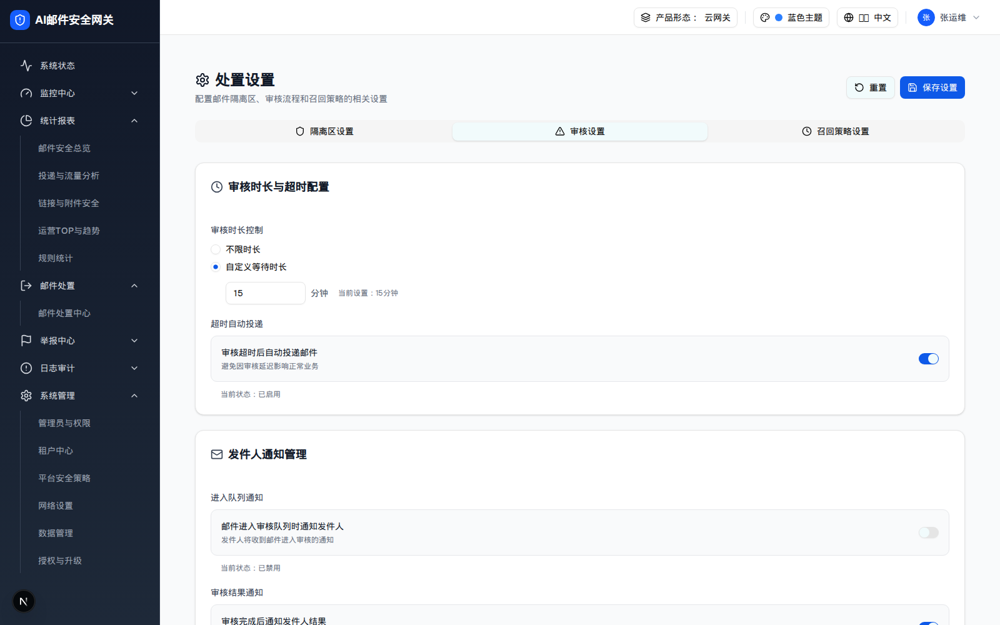
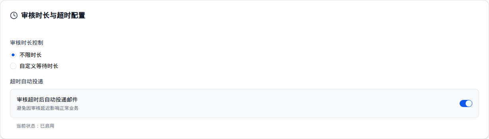

| 所属组件 | 2.7 审核设置（Tab review） |
| 主文件 | email-handling-disposal-settings/index.html |
| 触发路径 | 层级0 → 点击 Tab「审核设置」 |
审核超时后自动投递邮件
避免因审核延迟影响正常业务
当前状态：已启用
邮件进入审核队列时通知发件人
发件人将收到邮件进入审核的通知
当前状态：已禁用
审核完成后通知发件人结果
发件人将了解审核通过或拒绝
当前状态：已启用
例如：admin@example.com, reviewer@example.com
建议15-60分钟，避免通知过于频繁
当前生效时段：00:00:00 - 23:59:59

| 卡片 | 字段 | 控件 | 取值 / 校验 | 默认 | 联动 |
|---|---|---|---|---|---|
| 审核时长与超时配置（Clock） | reviewPeriod | RadioGroup | unlimited 不限时长 / custom 自定义等待时长 | custom | 选 unlimited → 隐藏分钟数输入 |
customMinutes | Input[number] | min=1 max=300 | 15 | 下方文案「当前设置：{minutes}分钟」实时更新 | |
autoDeliverEnabled | Switch | bool | 开 | 「当前状态：已启用/已禁用」联动 | |
| 发件人通知管理（Mail） | senderNotifyOnEntry | Switch | bool | 关 | 文案「邮件进入审核队列时通知发件人」 |
senderNotifyOnComplete | Switch | bool | 开 | 文案「审核完成后通知发件人结果」 | |
| 审核人通知机制（Bell） | reviewerEmails | Input[text] | 多邮箱逗号分隔（无格式校验） | admin@example.com, reviewer@example.com | 提示「例如：admin@example.com, reviewer@example.com」 |
notificationInterval | Input[number] | min=1 max=1440（分钟） | 30 | 提示「建议15-60分钟，避免通知过于频繁」 | |
notificationStartTime | Input[time step=1] | HH:MM:SS | 00:00:00 | 下方「当前生效时段：{start} - {end}」实时更新 | |
notificationEndTime | Input[time step=1] | HH:MM:SS | 23:59:59 |

| 比对项 | demo 实际 DOM | 提取的 HTML | 是否一致 |
|---|---|---|---|
| 根节点 | div[role=tabpanel][data-state=active] | 同 | 一致 |
| 卡片数 | 3 | 3 | 一致 |
| 后代节点数 | 86 | 86 | 一致 |
| Switch 数 | 3（超时自动投递 / 进入队列通知 / 审核结果通知） | 3 | 一致 |
| Switch 默认态 | checked / unchecked / checked | 同 | 一致 |
| 「不限时长」后节点数 | 27（该卡片，自定义分钟行被移除） | 27 | 一致 |
| PRD 要求的「审核动作」（通过/拒绝） | 本页不存在（在邮件处置中心执行） | 不包含 | 一致 |
网关 models.DisposalReviewSettings 与本面板字段一一对应（duration_mode / custom_minutes / timeout_auto_deliver / sender_notify_on_queue / sender_notify_on_result / reviewer_emails / reviewer_notify_interval_minutes / reviewer_active_start / reviewer_active_end），另有 demo 未暴露的 max_recheck_minutes、timeout_temp_disposal、timeout_mark_positions、timeout_mark_text（旁路 Session N/M 超时临时处置）。